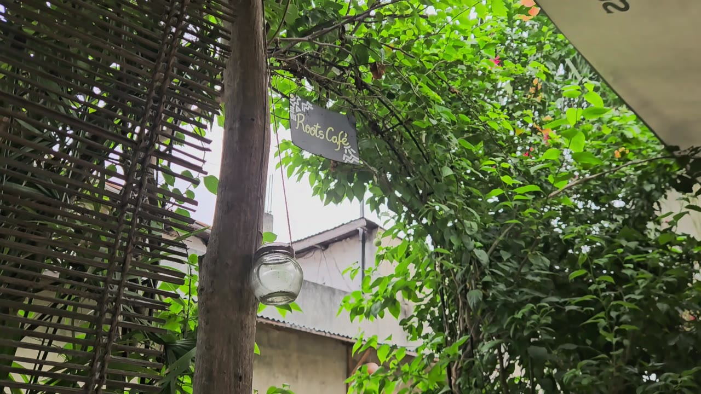
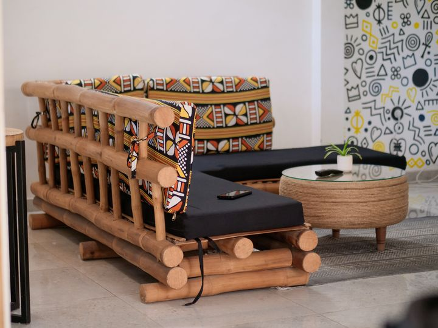

AhoefaSainte-Rita, Cotonou
Tu passes à Cotonou bientôt ? Kër Yawa, c’est la base. TMTC ;)
Visiter
Un patrimoine immense de peuples mythiques et une dynamique de développement remarquable : visitez le Bénin dès aujourd’hui !

AhoefaVisiter Sainte-Rita, Cotonou KekeliVisiter
Sainte-Rita, Cotonou
KekeliVisiter
Sainte-Rita, Cotonou
 Lion BarVisiter
Grand-Popo
Lion BarVisiter
Grand-Popo
 Bel Ami sur PilotisVisiter
Lac Ahémé
Bel Ami sur PilotisVisiter
Lac Ahémé
Tu passes à Cotonou bientôt ? Kër Yawa, c’est la base. TMTC ;)
VisiterVous sortez ce soir ? Ça tombe bien, au Bénin, ça bouge ! Arts & culture, événements, soirées et festivals : tous les bons plans ci-dessous.
Rien n’est encore inscrit. Les premiers événements du Roots et de NU arrivent.
Rien n’est encore inscrit. Les programmes en cours arrivent.
Rien n’est encore inscrit. Les bonnes adresses hors de Cotonou arrivent.
Ce qu’il faut avoir en tête avant de poser ses valises.
C'est réservé. On t'attend.
C'est commandé. La cuisine s'y met.
Donne ce code au comptoir. On t'appelle par ton prénom dès que c'est prêt.
Cette sortie n’a pas encore de date.
C'est réservé. On t'attend.
Garde ce code : il retrouve ta réservation à tout moment, même sans compte.